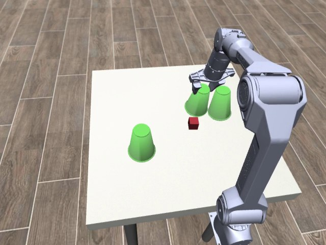

Robot-use agents · Field guide
From a grasp request to a local robot policy
On Piper, our student went from pushing the basket successfully in five of thirty scenes to twenty-eight. In the very same distillation experiment, reverse ordering fell from twenty-three successes to nineteen. This short field guide follows those two outcomes back through the training example, the fingertips and the scorekeeper.
Start reading
Inside the guide
Action interfacesHow does a model response move a fingertip?Trace the same can-grasp request through EEF, tools and a VLA.Piper distillationTeaching a 4B student to choose toolsFollow 1,041 training records into a fifteen-task comparison.TERM experimentsDoes a tool repair stay in code or transfer to the weights?Read the tool, ablation, cost and hardware tables together.Recent workWhat has changed in robot-use agents in two months?Geometry, budget audits and simulation reinforcement learning.